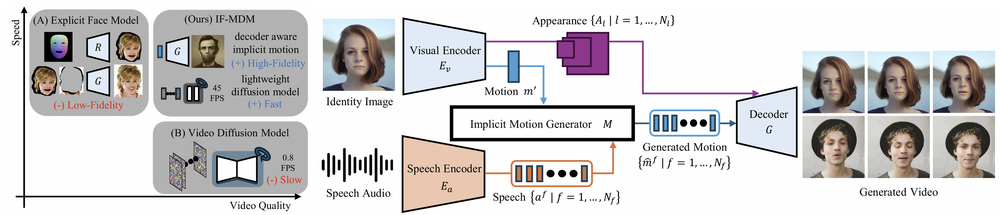

Publications
IF-MDM: Implicit Face Motion Diffusion Model for High-Fidelity Realtime Talking Head Generation
arXiv 2024.12
Sejong Yang,
Yang Zhou,
Seoung Wug Oh, and
Seon Joo Kim.

Dense Interspecies Face Embedding
NeurIPS 2022
Sejong Yang,
Subin Jeon,
Seonghyeon Nam, and
Seon Joo Kim.
SRFlow-DA: Super-Resolution Using Normalizing Flow with Deep Convolutional Block
CVPR Workshop 2021
Younghyun Jo,
Sejong Yang, and
Seon Joo Kim.
Investigating loss functions for extreme super-resolution
CVPR Workshop 2020
Younghyun Jo,
Sejong Yang, and
Seon Joo Kim.